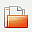
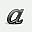

Gummi
Dieser Artikel wurde für die folgenden Ubuntu-Versionen getestet:
Ubuntu 14.04 Trusty Tahr
Zum Verständnis dieses Artikels sind folgende Seiten hilfreich:
 Gummi
Gummi  ist ein leichtgewichtiger LaTeX-Editor, der in C/GTK+ geschrieben ist. Er bietet im Unterschied zu den anderen LaTeX-Editoren eine integrierte Live-Vorschaufunktion an, welche sich automatisch beim Schreiben aktualisiert.
ist ein leichtgewichtiger LaTeX-Editor, der in C/GTK+ geschrieben ist. Er bietet im Unterschied zu den anderen LaTeX-Editoren eine integrierte Live-Vorschaufunktion an, welche sich automatisch beim Schreiben aktualisiert.
Gummi hat zwar nicht annähernd den Funktionsumfang wie andere, mächtige Editoren, z.B. Kile, aber die integrierte Live-Vorschaufunktion ist ein interessantes Feature, welches besonders auf großen Monitoren sinnvoll genutzt werden kann. Außerdem bietet er nützliche Hilfen für das Einfügen von Bildern und Tabellen. Eine einfache Unterstützung für das Zitieren von Quellen wird ebenfalls geboten.
Installation¶
Das Programm kann aus den offiziellen Paketquellen installiert werden [1]:
gummi (universe)
 mit apturl
mit apturl
Paketliste zum Kopieren:
sudo apt-get install gummi
sudo aptitude install gummi
PPA¶
Eine aktuellere Version steht über ein "Personal Packages Archiv" (PPA) [2] zur Verfügung.
Adresszeile zum Hinzufügen des PPAs:
ppa:gummi/gummi
Hinweis!
Zusätzliche Fremdquellen können das System gefährden.
Ein PPA unterstützt nicht zwangsläufig alle Ubuntu-Versionen. Weitere Informationen sind der  PPA-Beschreibung des Eigentümers/Teams gummi zu entnehmen.
PPA-Beschreibung des Eigentümers/Teams gummi zu entnehmen.
Damit Pakete aus dem PPA genutzt werden können, müssen die Paketquellen neu eingelesen werden.
Nach dem Aktualisieren der Paketquellen kann folgendes Paket installiert werden:
gummi-gtk3 (ppa)
mit apturl
Paketliste zum Kopieren:
sudo apt-get install gummi-gtk3
sudo aptitude install gummi-gtk3
Wenn man Gummi ohne die Abhängigkeiten von TeXLive installieren möchte, steht das folgende Paket zur Verfügung:
gummi-gtk3-notex (ppa)
mit apturl
Paketliste zum Kopieren:
sudo apt-get install gummi-gtk3-notex
sudo aptitude install gummi-gtk3-notex
Bedienung¶
Gummi findet man bei Ubuntu-Varianten mit einem Anwendungsmenü unter "Büro -> Gummi" oder kann mit dem Befehl gummi gestartet werden [3].
Die Oberfläche von Gummi teilt sich in zwei Bereiche auf:
Im linken Bereich findet man den LaTeX-Quellcode zum aktuellen Dokument. Am unteren Rand findet man eine Tab-Leiste, in der man zwischen dem Dokument, dem Einfügen eines Bildes, einer Tabelle und einer Matrix umschalten kann.
Innerhalb des rechten Bereiches kann man zwischen dem Vorschau-Fenster, der Fehlerausgabe und der Bibliographie umschalten.
Literaturverzeichnis¶
Um ein Literaturverzeichnis zu verwenden, muss man zuerst unter "Werkzeuge -> Bibliographie einfügen" eine Literaturdatei laden. Danach muss im "Bibliographie"-Reiter noch auf "Aktualisieren" gedrückt werden.
Werkzeugleiste¶
Die Grundfunktionen erreicht man über die Werkzeugleiste:
| Werkzeugleiste | ||
| Symbol | Beschreibung | |
| Neues Dokument erstellen | ||
|  | Lädt eine Datei | |
| Aktuelle Datei speichern | ||
| Text wird fett dargestellt | ||
|  | Kursiver Text | |
| Unterstreicht den Text | ||
| Richtet den Text linksbündig aus | ||
| Zentriert den Text | ||
 | Richtet den Text rechtsbündig aus | |
Vorlagen¶
Gummi bietet die Möglichkeit, Vorlagen (Templates) zu verwalten. Zunächst erstellt man ein Dokument, das man als Vorlage speichern möchte. Um dies als Vorlage verwenden zu können, muss man nun unter "Datei -> Neu von Vorlage" auf "Hinzufügen" klicken und der Vorlage einen Namen geben.
Tastenkürzel¶
| Tastenkürzel | |
| Taste(n) | Bedeutung |
| Strg + N | Neu |
| Strg + O | Öffnen |
| Strg + S | Speichern |
| ⇧ + Strg + S | Speichern unter |
| Strg + E | Export to PDF |
| Strg + Q | Beenden |
| Strg + Z | Rückgängig |
| ⇧ + Strg + Z | Wiederholen |
| F8 | Rechtes Fenster |
| F11 | Vollbild |
| Strg + F | Suchen und Ersetzen |
| Strg + G | Nächster Treffer |
| ⇧ + Strg + G | Vorheriger Treffer |
| F9 | PDF erzeugen |
 Programmübersicht
Programmübersicht- Erstellt mit Inyoka
-
 2004 – 2017 ubuntuusers.de • Einige Rechte vorbehalten
2004 – 2017 ubuntuusers.de • Einige Rechte vorbehalten
Lizenz • Kontakt • Datenschutz • Impressum • Serverstatus -
Serverhousing gespendet von